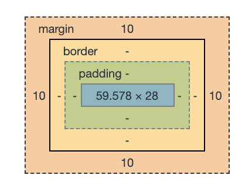

# Box Model
All HTML elements can be considered as boxes. In CSS, the term "box model" is used when talking about design and layout.
The CSS box model is essentially a box that wraps around every HTML element. It consists of: margins, borders, padding, and the actual content.
There is a screenshot from Chrome:

## Margin collapse
You can see this example in [Here](https://jsfiddle.net/d9zb13jy/):
```html
```
```css
p{
margin: 10px;
}
```
In the final result, the top margin of p2 is 0. In other word, its margin merged with p1's bottom margin.
But if we set `float: left;`, the horizontal margin won't collapse. As only one type of margin can collapse: Vertical (top and bottom). Margin collapse never applies to horizontal (left and right) margins.
## height and width in Box Model
If we set `width:100%`, the element will exceed the whole page, its width actually is larger than 100%. Because the default `box-sizing` is `content-box`, which won't involve margin and padding's value into calculation.
Another choice is `border-box`, which will involve both content and padding size into calculation, still without margin.
## BFC
A Block Formatting Context is part of the visual CSS rendering of a web page in which block boxes are laid out. The positioning scheme to which it belongs is normal flow
It is an HTML box that satisfies at least one of the following conditions:
1. The value of float is not none
2. The value of position is neither static nor relative
3. The value of display is table-cell, table-caption, inline-block, flex, or inline-flex
4. The value of overflow is not visible.
## Position
1. fix
- the element is positioned related to the browser window, not BFC. The element will scroll with page scrolling.
2. absolute
- the element is positioned absolutely to its first positioned parent, not BFC. The element won't scroll with page scrolling.
3. relative
- the element is positioned relative to its normal position.
4. static
- this is the default value, all elements are in order as they appear in the document.
5. sticky
- the element is positioned based on the user's scroll position.